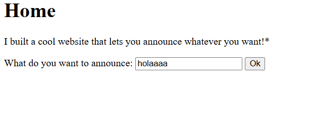
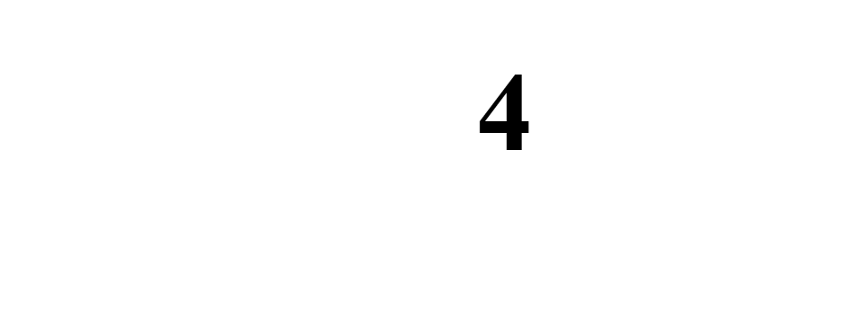
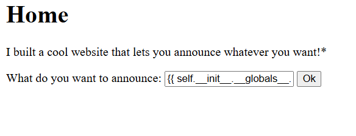
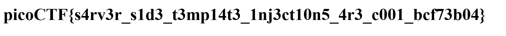

destripador3000@PicoCTF:
~$echo SSTI1
Máquina SSTI1
Laboratorio Sencillo de PicoCTF en el cual debemos y como su nombre lo indica se basa en la vulnerabilidad Server-Side Template Injection.

Al ingresar algo en el campo de texto luego se puede evidenciar que la página devuelve lo escrito. Esto puede ser un indicio mas no es la confirmación de que la página sea vulnerable. Al ingresar algunos templates se puede confirmar esta vulnerabilidad. Por ejemplo si agregamos en el campo del input un template {{2*2}}. Template que corresponde a jinja2 tecnología usada por flask para manejar templates. Nos devolverá:

Para terminar de confirmar también podemos hacer {{2*'2'}} poniendo el segundo 2 en comillas para que el template lo interprete como cadena y esto devolverá:
Confirmando la existencia de la vulnerabilidad busco en internet "injection ssti jinja2" para lo que me sale un payload en particular:
{{ self.__init__.__globals__.__builtins__.__import__('os').popen('id').read() }}
Este payload mostrará el id que tiene el usuario que esta escribiendo en los inputs. Para nuestra sorpresa tenemos el id de root lo que es una vulnerabilidad muy grande. Sabiendo esto cambiamos el "id" del payload y ponemos "ls" para listar lo que se encuentra en ese mismo directorio. Donde se encuentra la flag para leer la flag se hace "cat flag" y se obtiene.

Esta es una máquina fácil pero muy interesante para practicar vulnerabilidades web como lo es el SSTI.

Juan Esteban Valencia (Destripador3000)